1 Introduction
Space-filling designs are a class of experimental designs for deterministic computer experiments, which are widely used in science and engineering applications (Joseph 2026). They ensure that the design points are spread evenly throughout the experimental region, minimizing gaps such that no region is left unexplored.
The motivation behind space-filling designs arises from the need to build accurate surrogate models, such as Gaussian process (or kriging) models for computer simulations (Santner et al. 2018; Gramacy 2020). A good experimental design should place points strategically in the experimental region to capture variations of the response surface while avoiding unnecessary clustering. There are two general strategies for constructing designs: model-based designs and space-filling designs. Model-based designs, such as the maximum entropy design (Currin et al. 1991) and the integrated mean squared prediction design (Sacks et al. 1989), are often limited in practice due to their dependence on unknown correlation parameters in the Gaussian process model. In contrast, space-filling designs offer a model-free approach, providing a more robust framework for model fitting.
There are several space-filling criteria for assessing the quality of a design (Joseph 2016). Among them, the minimax and maximin criteria are widely adopted geometric measures, both of which have asymptotic optimality justification for Gaussian process modeling (Johnson et al. 1990). However, in high-dimensional spaces, designs optimized using these criteria often exhibit poor projections in lower-dimensional subspaces. Latin hypercube design (LHD) addresses this issue by constraining that each factor of the design is evenly spaced throughout its range (McKay et al. 1979). It is often combined with the aforementioned minimax or maximin criteria to achieve both good coverage and projection property (Morris and Mitchell 1995; Dam 2008). Maximum projection (MaxPro) designs further improve over maximinLHD, which ensures better projection properties across all subsets of factors. Uniformity is another desirable property for designs, particularly when the objective is integration or uncertainty quantification (Fang et al. 2005).
Several open-source packages are available to construct space-filling designs, especially Latin hypercube designs. The lhs package provides functionalities to generate random LHD and options to optimize the design based on various criteria such as maximin, S-optimality, etc. (Carnell 2024). The DiceDesign package provides a comprehensive suite of design choices, including model-based designs via exchange algorithms or stochastic processes, as well as optimized LHDs using genetic algorithms or simulated annealing (Dupuy et al. 2015). SLHD package (Ba 2015) uses simulated annealing to generate maximin LHD, which can also accommodate categorical factors using sliced LHD. The maximin package deals with maximin design (Sun and Gramacy 2024). It improves an existing design by swapping out or optimizing the row with the minimum distance. For minimax designs, the minimaxdesign package employs clustering algorithms combined with particle swarm optimization to achieve globally optimal designs (Mak 2021). For MaxPro design, the MaxPro package provides functionality to generate LHDs optimized for the MaxPro criterion, with further refinement made possible through continuous optimization (Ba and Joseph 2018). In this article, we introduce the SFDesign package (Wang and Joseph 2025) which offers considerable improvements over existing packages for generating maximin designs, MaxPro designs, uniform designs, and minimax designs. We also include a function to generate clustering-based designs, which is not available in other packages. A list of the major functions is presented in Table 1.
| Name | Description | |
|---|---|---|
maximin.crit |
maximin criteria | |
maxpro.crit |
maximum projection criteria | |
uniform.crit |
wrap-around discrepancy | |
cluster.error |
clustering error | |
randomLHD |
random LHD | |
maximinLHD |
LHD optimized for maximin criteria | |
maxproLHD |
LHD optimized for MaxPro criteria | |
uniformLHD |
LHD optimized for wrap-around discrepancy | |
customLHD |
LHD optimized for a user-defined criteria | |
clustering.design |
designs generated by clustring algorithm | |
maximin.optim |
a continuous optimizer for maximin-distance design | |
maxpro.optim |
a continuous optimizer for MaxPro design | |
uniform.optim |
a continuous optimizer for uniform design | |
continuous.optim |
a continuous optimizer for user-defined criteria |
2 Review of space-filling design
In this section, we introduce the notation and formally define various space-filling criteria. Let \(\mathcal{X}\subset\mathbb R^p\) denote the experimental region of interest, which is typically assumed to be the unit hypercube \(\mathcal{X} = [0, 1]^p\). Denote a design of size \(n\) by the design matrix \(\boldsymbol{\mathbf{D}}_n= [\boldsymbol{\mathbf{x}}_1, \cdots, \boldsymbol{\mathbf{x}}_n]^T\), where \(\boldsymbol{\mathbf{x}}^T_i\) represents the \(i\)th design point.
A maximin design aims to maximize the minimum pairwise distance between design points, ensuring that points are spread as far apart as possible. It can be obtained by maximizing \[\begin{equation} \label{eq:maximin} \phi_{\text{Mm}}(\boldsymbol{\mathbf{D}}_n) = \min_{i\neq j} \|\boldsymbol{\mathbf{x}}_i-\boldsymbol{\mathbf{x}}_j\|_2, \end{equation} \tag{1}\] where \(\|\cdot\|_2\) denotes the Euclidean norm. On the other hand, minimax designs focus on reducing the largest gap within the design space \(\mathcal{X}\) by minimizing: \[\begin{equation} \phi_{\text{mM}}(\boldsymbol{\mathbf{D}}_n) = \max_{\boldsymbol{\mathbf{x}}\in\mathcal{X}} \min_{i} \|\boldsymbol{\mathbf{x}}-\boldsymbol{\mathbf{x}}_i\|_2. \end{equation}\] This criterion ensures that the maximum distance from any point in the experimental region \(\mathcal{X}\) to the nearest design point is minimized, effectively reducing the largest uncovered region in the space.
Factor sparsity is commonly observed in real physical systems; that is, only a few factors out of the numerous factors in the system may affect the response. Therefore, in deterministic simulations, we do not want replications when we project points to a lower subspace. A Latin hypercube design (LHD) ensures good one-dimensional projections (McKay et al. 1979). In an LHD, each column of \(\boldsymbol{\mathbf{D}}_n\) is a permutation of \(\left[0.5/n, 1.5/n, \dots, (n-0.5)/n\right]\), which guarantees that the projections of the points in each dimension are evenly distributed. For an \(n\)-point design with \(p\) factors, there are \(n^p\) possible LHD configurations; however, not all of them are space-filling. To enhance the space-filling properties of LHDs, we can optimize them with respect to the maximin criterion (Morris and Mitchell 1995). The optimization is usually done by minimizing a reciprocal distance criterion \[\begin{equation} \label{eq:MmLHD} \phi_{\text{rec}}(\boldsymbol{\mathbf{D}}_n) = \left\{\frac{1}{{n\choose 2}}\sum_{i=1}^{n-1}\sum_{j=i+1}^{n}\frac{1}{\|\boldsymbol{\mathbf{x}}_i-\boldsymbol{\mathbf{x}}_j\|_2^r} \right\}^{1/r}, \end{equation} \tag{2}\] which is proportional to \(1/\phi_{\text{Mm}}(\boldsymbol{\mathbf{D}}_n)\) for large enough \(r\).
Although maximin LHDs ensure good one-dimensional and full-dimensional space-filling properties, they may not be good when projected onto other subspaces. To improve the projection properties of a design for all possible subspaces, maximum projection (MaxPro) design was proposed (Joseph et al. 2015). It minimizes : \[\begin{equation} \label{eq:maxpro} \phi_{\text{maxpro}}(\boldsymbol{\mathbf{D}}_n) = \left\{\frac{1}{{n\choose 2}}\sum_{i=1}^{n-1}\sum_{j=i+1}^{n}\frac{1}{\prod_{l=1}^p(x_{il}-x_{jl})^2}\right\}^{1/p}. \end{equation} \tag{3}\] Compared to (2), the only difference is that the Euclidean distance in the denominator is replaced by a “product distance”, but this small change ensures good projections to all subspaces.
Uniformity of the points in the experimental region is another important property of space-filling designs, particularly in the context of mean estimation of a model output. Let \(F_n(\boldsymbol{\mathbf{x}}) = 1/n \sum_{i=1}^n I(\boldsymbol{\mathbf{x}}_i\leq\boldsymbol{\mathbf{x}})\) be the empirical distribution of the design points, where \(I\) is the indicator function in which the comparison is done component-wise. Let \(f:\mathcal{X}\to \mathbb R\) denote the computer code. In order for the mean estimation error \(|\mathbb E(f)- \sum_{i=1}^{n}f(\boldsymbol{\mathbf{x}}_i)/n|\) to be small for any \(f\), it is ideal for \(F_n(\boldsymbol{\mathbf{x}})\) to closely approximate the uniform distribution. Several discrepancies have been proposed, such as star \(L_p\)-discrepancy and modified \(L_p\)-discrepancy, to measure the uniformity of designs (Fang et al. 2000). In this package, we utilize the wrap-around discrepancy because of its computational simplicity and nice projection properties (Hickernell 1998): \[\begin{equation} \label{eq:wa} \phi_{\text{wa}}(\boldsymbol{\mathbf{D}}_n) = -\left(\frac{4}{3}\right)^p + \frac{1}{n^2}\sum_{i,j=1}^n\prod_{k=1}^p\left[\frac{3}{2} - |x_{ik}-x_{jk}|(1-|x_{ik}-x_{jk}|)\right]. \end{equation} \tag{4}\] Finally, we introduce clustering-based designs, which is justified as a way to minimize an upper bound of the integrated prediction error of a Gaussian process. The clustering criterion is: \[\begin{equation} \label{eq:cluster} \phi_{\text{cluster}}(\boldsymbol{\mathbf{D}}_n) = \sum_{i=1}^n \int_{V_i}\|\boldsymbol{\mathbf{x}}-\boldsymbol{\mathbf{x}}_i\|^{\alpha}d\boldsymbol{\mathbf{x}}. \end{equation} \tag{5}\] where \(V_i, i=1,\dots,n\) are the Voronoi regions. For \(\alpha=1\), the criterion is the same as \(K\)-median problem. For \(\alpha\) large enough, the criterion can serve as a surrogate criterion for the minimax design (Mak and Joseph 2018).
3 Optimization algorithms
In this section, we present the optimization algorithms employed in this package and illustrate their effectiveness through comparisons with existing packages.
Designs based on pairwise distance
Many of the criteria reviewed in Section 2, such as maximin criterion, MaxPro, and wrap-around discrepancy, are functions of the pairwise distances among design points. Motivated by this observation, we propose a general optimization framework for improving such criteria, with and without constraints to Latin hypercube designs.
For Latin hypercube designs, the optimization framework consists of two stages: an initial optimization phase using simulated annealing (Algorithm 1, (Morris and Mitchell 1995)), followed by a deterministic local search refinement (Algorithm 2). Both stages iteratively enhance the design by swapping coordinates between selected pairs of design points.
In the first stage, design point pairs are randomly selected, and swaps are accepted with a certain probability, even if they do not immediately improve the criterion. This probabilistic acceptance helps prevent the algorithm from getting trapped in local optima, enabling more effective exploration of the design space.
In the second stage, a deterministic local search is performed by systematically scanning the design matrix. Every coordinate of each pair of design points is swapped, but the swap is only accepted if it leads to an improvement in the criterion. This greedy approach efficiently refines the design, converging towards a local optimum.
For designs that are not restricted to Latin hypercubes, the optimization process begins with the optimized LHD obtained through the above process or some initial design provided by the user and then transitions to continuous optimization using the low-storage BFGS algorithm from the NLopt package (Liu and Nocedal 1989; Johnson 2008). If a surrogate objective function is used, such as in maximin designs, an additional simulated annealing step can be applied at the end to directly optimize the original criterion.
We present three specific designs implemented in the packages as follows.
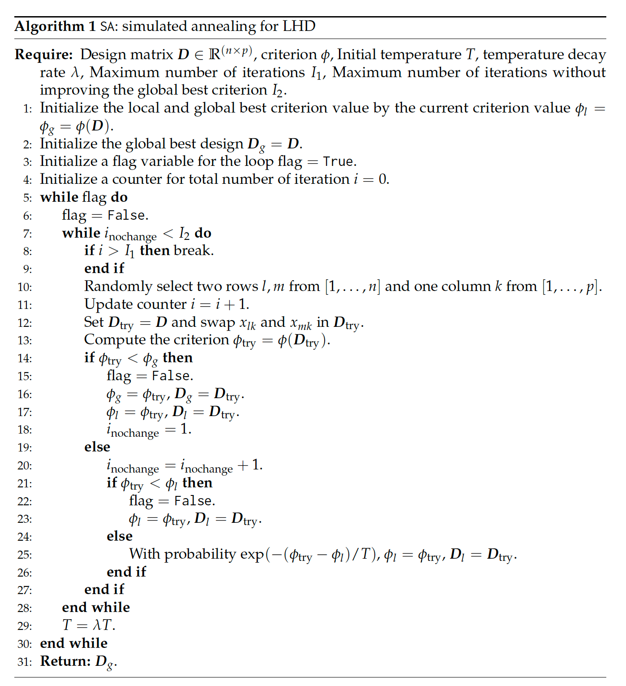
SA: simulated annealing for
LHD
Maximin design
Instead of directly optimizing the maximin criterion, we start by minimizing the average reciprocal distance in (2). The advantage of this criterion is that it helps differentiate between designs that have the same maximin measure. The reciprocal distance criterion is equivalent to the maximin criterion for large enough \(r\). Motivated by the choice in (Joseph et al. 2015), we use \(r=2p\) as the default setting in our package.
The gradient of \(\phi^r_{\text{rec}}\) with each element in \(\boldsymbol{\mathbf{D}}_n\) is: \[\begin{equation} \frac{\partial \phi^r_{\text{rec}}}{\partial x_{ik}} = \frac{-2r}{n(n-1)}\sum_{j\neq i}\frac{x_{ik}-x_{jk}}{\|\boldsymbol{\mathbf{x}}_i-\boldsymbol{\mathbf{x}}_j\|_2^{r+2}}, \end{equation}\] which can be used for gradient-based continuous optimization of maximin design.
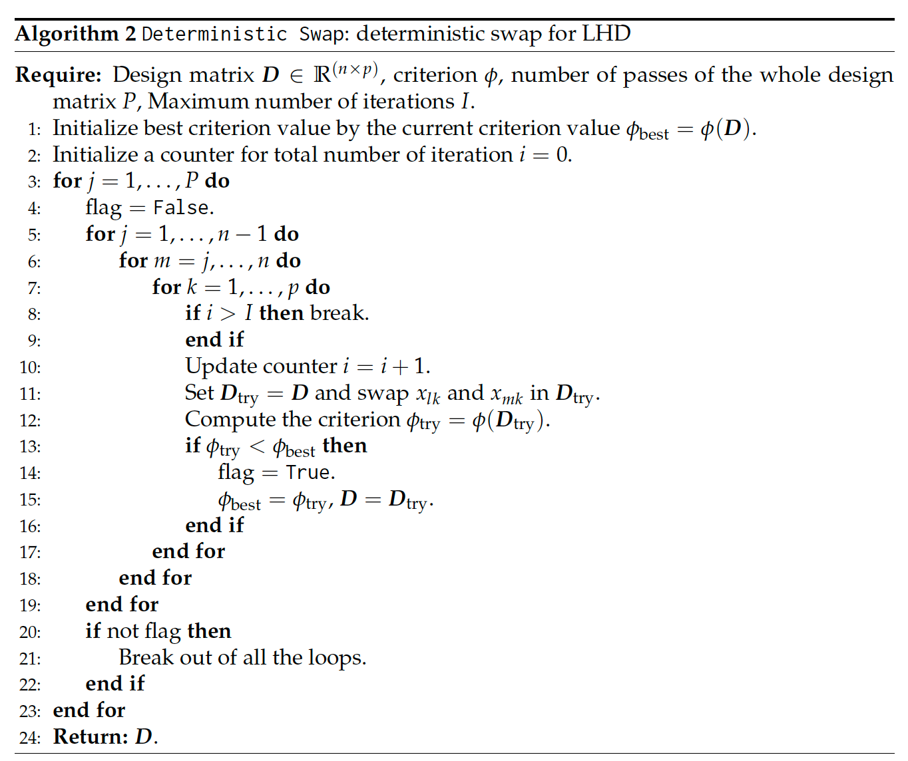
Deterministic Swap: deterministic
swap for LHD
The following codes generate a two-dimensional seven-point maximin LHD:
R> n <- 7
R> p <- 2
R> D <- maximinLHD(n, p)$designBy default, it will go through the two-stage optimization. To perform continuous optimization with a simulated annealing (SA) step at the end, the following code can be used:
R> D <- maximin.optim(D, sa = TRUE)Figure 1 presents the generated seven-point maximin design by the above code (denoted as SFD) alongside with the optimal solution. The design points with the smallest pairwise distance nearly coincide with the optimal points, with the exception of the top-right point, which deviates slightly. This deviation occurs because its placement has minimal impact on the maximin criterion. Maximin designs are closely related to the sphere packing problem (Conway and Sloane 2013). A comparison of the maximin criterion of the design generated by this package with the best sphere packing solution recorded in the literature (http://hydra.nat.uni-magdeburg.de/packing/, denoted as record) is shown in Figure 2. It can be seen that the designs generated by SFDesign are almost optimal. Note that the best sphere packing solutions are available for only two- or three-dimensional problems, whereas our package can be used for any number of dimensions making it useful for computer experiments.
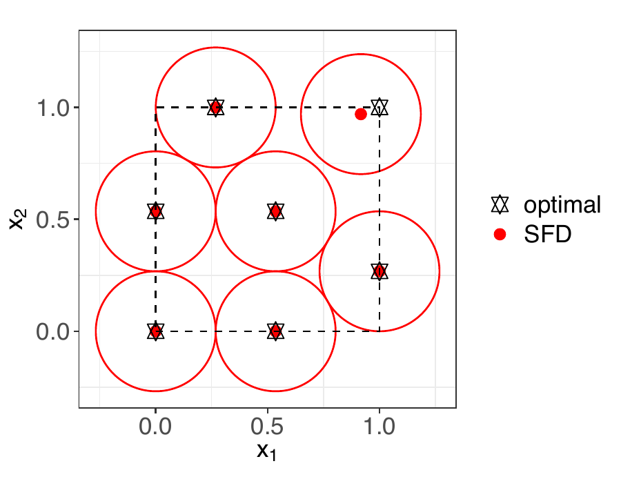
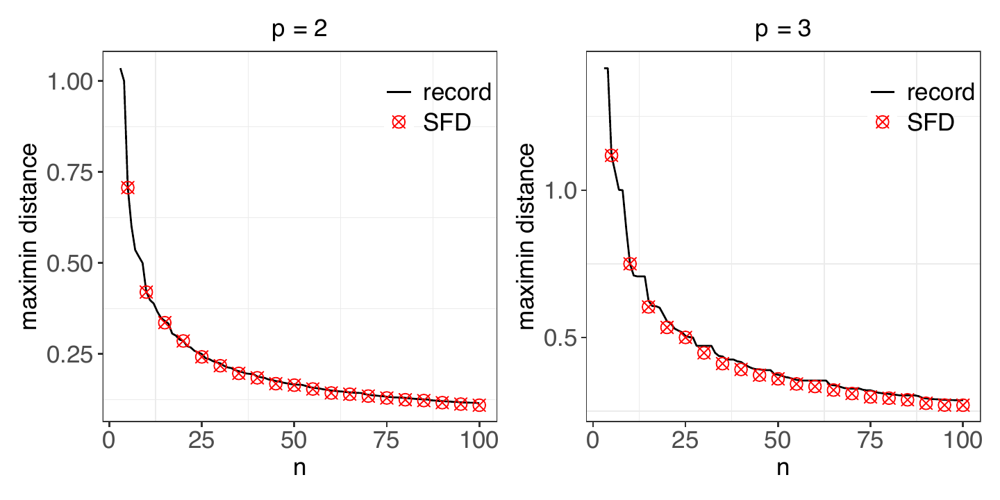
In the above example, we use maximin LHD as the initial design for the
maximin.optim function. However, if our final goal is to generate a
maximin design without LHD constraints, optimizing over an initial
maximin LHD may be inefficient, especially for high dimensions where
maximin design points should usually be located at corners. To address
this issue, the maximin.optim has an option to set
find.best.ini = TRUE. In this case, in addition to the user-supplied
initial design, new initial designs are generated internally for
optimization. Given the size of the design \(n\), the function will first
construct the closest full factorial design. If the number of points in
this design is less than \(n\), additional points are added sequentially
to augment the design; otherwise, points are removed sequentially to
reach the desired size. Initial designs constructed this way typically
yield a smaller reciprocal distance criterion after continuous
optimization.
We present a comparison with the maximinSLHD function from the
SLHD package (Ba 2015)
and the maximin function from the
maximin package (Sun
and Gramacy 2024) in
Figure 4. In the figure, SLHD denotes the
maximin LHD generated by
SLHD; SFD.LHD refers to
the LHD obtained after deterministic swap
(Algorithm 2); SFD
is the result of applying continuous optimization to SFD.LHD, with the
setting find.best.ini = TRUE, sa = FALSE; maximin denotes the designs
produced by the
maximin package and it
directly minimizes the maximin criterion (Equation (1))
instead of the reciprocal distance.
For Latin hypercube designs, a considerable improvement is observed following the deterministic swap given by our package. When the LHD constraint is removed, further enhancement is achieved through continuous optimization, and the result is always better than maximin. In higher dimensions (e.g., p = 10), it should be noted that almost all SFD designs came from the internal generation of full factorial-based initial designs rather than the maximin LHD-based initial designs.
We highlight here the efficiency of the deterministic swap algorithm for improving maximin Latin hypercube designs, as illustrated in the left panel of Figure 4. For a fair comparison, the total number of swaps is fixed at 15,000. In our implementation, 7,500 swaps are allocated to the simulated annealing stage and 7,500 to the deterministic swapping stage. Before the onset of deterministic swapping, our method exhibits performance similar to SLHD, since both methods employ the same algorithmic framework during the SA stage. Once the algorithm transitions to deterministic swapping, the criterion value decreases faster than SLHD.
![Figure 2: Trajectory of the criterion value with respect to the number of swaps performed by the algorithm. The gray dashed lines indicate when the deterministic swap stage starts. The solid lines represent the mean \bar{m} over 100 experiments \boldsymbol{\mathbf{m}}=(m_1, \dots, m_{100}), and the error bars mark [\bar{m} - 1.96 std(\boldsymbol{\mathbf{m}})/\sqrt{100},\; \bar{m} + 1.96 std(\boldsymbol{\mathbf{m}})/\sqrt{100}]. Left:Maximin design, Right: Maximum projection design. SFD represents the SFDesign package, MaxPro represents the MaxPro package and SLHD represents the SLHD package.](fig/complexity_comparison.png)
Besides generating Latin hypercube design and optimizing designs with
the continuous optimizer maximin.optim,
SFDesign provides the
function maximin.remove for users to generate maximin designs from a
large pool of candidate points. In
Figure 5 we show an example of generating a
maximin of size 20 from 1000 candidates.
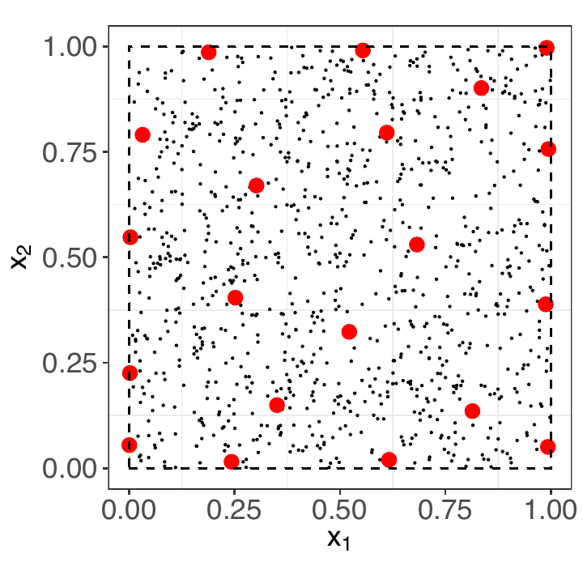
maximin.remove from 1000 candidate points. Red points
denote the design and the black dots are the candidates.
![Figure 4: Comparison of the reciprocal distance criterion of designs (smaller the better). Top row: SLHD and SFD.LHD denote the maximin LHDs generated by SLHD and SFDesign, respectively; Bottom row: maximin and SFD denote the maximin designs without LHD constraints generated by maximin and SFDesign, respectively. Lines represent the median over 10 repetitions and the shaded bands mark the 5th and 95th quantiles. Solid and dashed lines represent designs with and without LHD restrictions, respectively.](fig/Maximin_compare.png)
Maximum projection design
The major difference of SFDesign and the existing MaxPro package (Ba and Joseph 2018) is the addition of the deterministic swap refinements. Here, we demonstrate how to generate a MaxPro LHD using only the SA step:
R> n = 50
R> p = 5
R> D <- maxproLHD(n, p, method='sa')$designThis is equivalent to the MaxProLHD function in the
MaxPro package.
However, a deterministic swap of any LHD can be performed by the
SFDesign package to
improve the MaxPro criterion:
R> D <- maxproLHD(D, method='deterministic')$designThe two steps can be grouped together by the following code:
R> result <- maxproLHD(n, p, method='full')The trajectory of the criterion during optimization can be visualized by
plotting result$crit.hist, as shown in
Figure 5. This graph is particularly useful for
selecting an appropriate initial temperature for the SA step, especially
for user-defined criteria discussed in
Section 3.1.4, as their initial temperature is not computed
automatically.
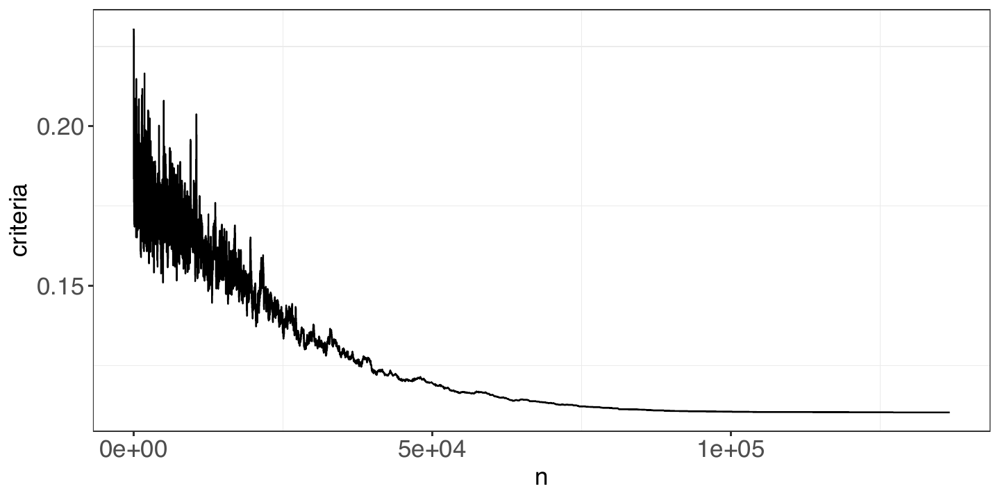
A follow-up continuous optimization can be performed to generate a design without LHD constraints:
R> D <- maxpro.optim(D)The improvement achieved by deterministic swap is significant, as illustrated in Figure 6. In the figure, solid lines represent results for LHD and dashed lines correspond to designs without LHD constraints. For low-dimensional designs, the improvement is moderate; however, in higher dimensions (e.g., \(p = 10\)), the deterministic swap step can, in some cases, enhance the LHD to even outperform designs without LHD constraints generated by the MaxPro package.
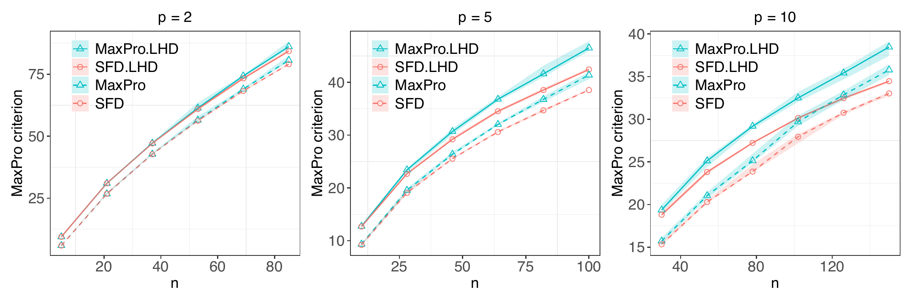
Similar to the maximin LHD, the deterministic swap algorithm can improve the MaxPro LHD efficiently for the same number of swaps, as shown in the right panel in Figure 4. The total number of swaps is fixed at 60,000 for both MaxPro and SFDesign. In our implementation, the number of swaps is fixed at 30,000 in the SA stage and 30,000 in the deterministic swapping stage. Once the algorithm enters the deterministic swapping stage, the MaxPro criterion clearly decreases faster for SFDesign.
Uniform design
For uniform design, we optimize the wrap-around discrepancy (Equation (4)). To generate an LHD with low discrepancy, the following code can be used:
R> D <- uniformLHD(n, p)$designFor continuous optimization, the gradient of wrap-around discrepancy with respect to each element in \(\boldsymbol{\mathbf{D}}_n\) can be derived as follows: \[\begin{equation} \frac{\partial \phi_{\text{wa}}}{\partial x_{ik}} = \frac{2}{n^2}\sum_{j\neq i} \prod_{t\neq k}^p\left[\frac{3}{2} - |x_{it}-x_{jt}|(1-|x_{it}-x_{jt}|)\right] \left(-\text{sign}(x_{ik}-x_{jk}) + 2(x_{ik}-x_{jk})\right). \end{equation}\] The following code carries out the continuous optimization:
R> D <- uniform.optim(D)$designFigure 9 presents a comparison with DiceDesign. The improvement is evident, particularly for high-dimensional designs. However, continuous optimization yields only marginal enhancements over the LHD version.
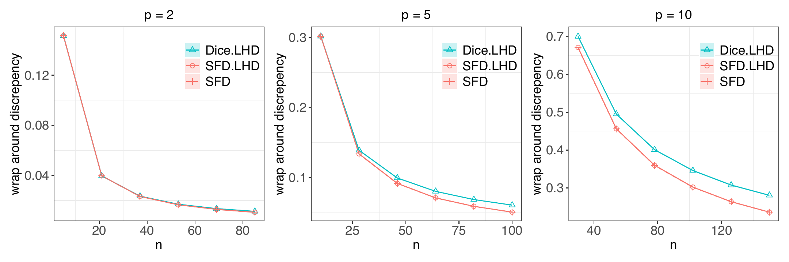
Besides Latin hyper cube design, we provide the functionality to generate a design of discrete factors with different number of levels. For example, suppose that we want to generate a design of size 9 on four factors with levels 3.
R> D = uniform.discrete(t = 3, p = 4, levels = rep(3, 4))The generated design is shown in Table 2, which actually is an orthogonal array \(OA(9,3^4)\) (Wu and Hamada 2021). Although this need not be the case for larger designs, the generated designs can be close to optimal.
| \(x_1\) | \(x_2\) | \(x_3\) | \(x_4\) |
|---|---|---|---|
| 2 | 3 | 3 | 3 |
| 2 | 1 | 1 | 2 |
| 1 | 3 | 1 | 1 |
| 3 | 2 | 1 | 3 |
| 1 | 2 | 3 | 2 |
| 2 | 2 | 2 | 1 |
| 1 | 1 | 2 | 3 |
| 3 | 1 | 3 | 1 |
| 3 | 3 | 2 | 2 |
User-defined criteria
The SFDesign provides the option to create an LHD based on a user-defined criterion.
R> D <- customLHD(compute.distance.matrix, compute.criterion,
update.distance.matrix, temp, n, p)The user should specify three functions: compute.distance.matrix which
computes the distance of each pair of design points, compute.criterion
which computes the user defined criterion from the distance matrix, and
update.distance.matrix which will update the distance matrix after
swapping one column of two rows of the design matrix. If simulated
annealing algorithm is used in the optimization, a reasonable initial
temperature temp should be specified as well so that the algorithm has
a balance of exploration and exploitation.
Continuous optimization can also be performed once the user specify the
initial design D.ini and the objective objective to minimize and the
gradient gradient with respect to the design matrix.
R> D <- continuous.optim(D.ini, objective, gradient)Clustering-based design
Clustering-based designs tend to minimize the integrated prediction error of a Gaussian process model. Let \(R(\boldsymbol{\mathbf{x}})=\exp\left(-\|\boldsymbol{\mathbf{x}}\|^2/\theta^2\right)\) be the Gaussian correlation function and \(\boldsymbol{\mathbf{r}}(\boldsymbol{\mathbf{x}}) = (R(\boldsymbol{\mathbf{x}}-\boldsymbol{\mathbf{x}}_1),dots,R(\boldsymbol{\mathbf{x}}-\boldsymbol{\mathbf{x}}_n))'\). Then the root mean squared error for a new point is \(\text{RMSE}(x) = \sqrt{1-\boldsymbol{\mathbf{r}}(\boldsymbol{\mathbf{x}})'\boldsymbol{\mathbf{R}}^{-1}\boldsymbol{\mathbf{r}}(\boldsymbol{\mathbf{x}})}\). Let \(\mathcal{X}=V_1\cup\dots\cup V_n\) be a Voronoi diagram based on the design points. The integrated root mean squared error (IRMSE) of a design \(\boldsymbol{\mathbf{D}}_n\) can be bounded as follows (Joseph 2026, Ch. 4): \[\begin{align*} \text{IRMSE}(\boldsymbol{\mathbf{D}}_n) &= \int_\mathcal{X} \sqrt{1-\boldsymbol{\mathbf{r}}(\boldsymbol{\mathbf{x}})'\boldsymbol{\mathbf{R}}^{-1}\boldsymbol{\mathbf{r}}(\boldsymbol{\mathbf{x}})} d\boldsymbol{\mathbf{x}}\\ &\leq \sum_{i=1}^n \int_{V_i}\sqrt{1-R^2(\boldsymbol{\mathbf{x}}-\boldsymbol{\mathbf{x}}_i)} d\boldsymbol{\mathbf{x}}\\ &=\sum_{i=1}^n \int_{V_i}\sqrt{1-\exp(-2\|\boldsymbol{\mathbf{x}}-\boldsymbol{\mathbf{x}}_i\|^2/\theta^2)} d\boldsymbol{\mathbf{x}}\\ &\approx \sum_{i=1}^n \int_{V_i}\sqrt{\|\boldsymbol{\mathbf{x}}-\boldsymbol{\mathbf{x}}_i\|^2/\theta^2} d\boldsymbol{\mathbf{x}} \quad (\text{assume}\; \|\boldsymbol{\mathbf{x}}-\boldsymbol{\mathbf{x}}_i\|\ll\theta)\\ &= \frac{\sqrt{2}}{\theta} \sum_{i=1}^n \int_{V_i}\|\boldsymbol{\mathbf{x}}-\boldsymbol{\mathbf{x}}_i\| d\boldsymbol{\mathbf{x}}. \end{align*}\] Minimizing this bound is equivalent to the \(K\)-median clustering problem. A generalization of this criteria is the clustering criterion \(\phi_{\text{cluster}}\) in ((5)). For example, when \(\alpha=2\), the clustering criterion is an upper bound for integrated mean square error \(\text{IMSE}(\boldsymbol{\mathbf{D}}_n) = \int_\mathcal{X} \{1-\boldsymbol{\mathbf{r}}(\boldsymbol{\mathbf{x}})'\boldsymbol{\mathbf{R}}^{-1}\boldsymbol{\mathbf{r}}(\boldsymbol{\mathbf{x}})\} d\boldsymbol{\mathbf{x}}\). This package provides the option to generate designs based on the clustering criterion for any \(\alpha > 0\), which is a functionality not provided by the existing packages. The design space is approximated using a large sample of Sobol points, \(\boldsymbol{\mathbf{S}}\). We implement Lloyd’s algorithm to generate cluster centers as design points, which iteratively refines an initial set of cluster centers by alternating between partitioning the design space into new Voronoi regions and updating the centers accordingly.
For \(\alpha \leq 2\), we update each center by Weiszfeld’s algorithm. Let \(\boldsymbol{\mathbf{x}}^{(0)}_i=\boldsymbol{\mathbf{x}}_i\) denote the initial position of the \(i\)th center and and let \(\boldsymbol{\mathbf{S}}_i\) represent the points within its Voronoi cell. The center is then updated as: \[\begin{equation*} \boldsymbol{\mathbf{x}}^{(k+1)}_i = \left.\left(\sum_{\boldsymbol{\mathbf{s}}\in\boldsymbol{\mathbf{S}}_i}\frac{\boldsymbol{\mathbf{s}}}{\|\boldsymbol{\mathbf{s}}-\boldsymbol{\mathbf{x}}^{(k)}_i\|_2^{2-\alpha}}\right)\middle/ \left(\sum_{\boldsymbol{\mathbf{s}}\in\boldsymbol{\mathbf{S}}_i}\frac{1}{\|\boldsymbol{\mathbf{s}}-\boldsymbol{\mathbf{x}}^{(k)}_i\|_2^{2-\alpha}}\right)\right. \quad \text{for } k=0, 1, \dots. \end{equation*}\] For \(\alpha > 2\), the centers are updated by accelerated gradient descent, similar to computing \(C_q\)-center in (Mak and Joseph 2018).
Here, we mainly focus on \(\alpha=1\), which corresponds to minimizing the IRMSE.
R> D <- cluster.based.design(n, p, alpha=1)Figure 8a shows a comparison with
Kmedians
(Godichon-Baggioni and Surendran 2023) and
Gmedian (Cardot 2022).
Since SFDesign
employs the same algorithm as
Kmedians, both
exhibit similar performance, and both outperform
Gmedian. However, the
C++ implementation makes
SFDesign more
efficient, as shown in
Figure 8b. Moreover,
SFDesign enjoys the
flexibility of different \(\alpha\). For example, choosing \(\alpha=10\) can
lead to an approximate minimax design. The
Gmedian package, which
implements an averaged stochastic gradient algorithm, is designed to
handle large samples in high-dimensional spaces efficiently (Cardot et
al. 2012). When the design dimension is extremely high, using
Gmedian may be
advantageous.
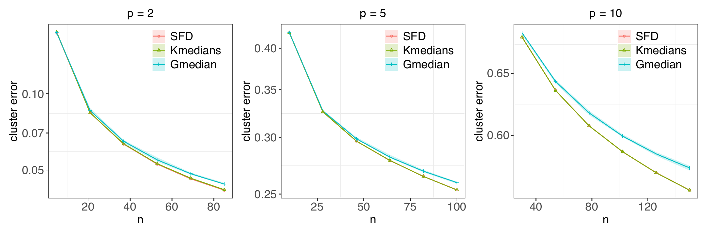
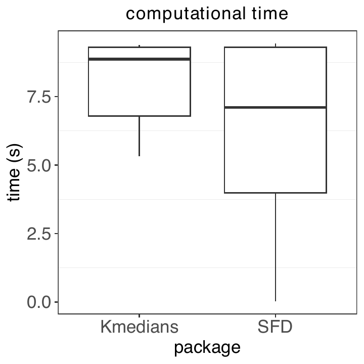
4 Case studies
Surrogate modeling
Here we consider the computer model for computing the midpoint voltage \(V_m\) of an output transformerless (OTL) push-pull circuit (Ben-Ari and Steinberg 2007). There are six input variables: resistance b1 (K-Ohms) \(R_{b1}\), resistance b2 (K-Ohms) \(R_{b2}\), resistance f (K-Ohms) \(R_f\), resistance c1 (K-Ohms) \(R_{c1}\), resistance c2 \(R_{c2}\)(K-Ohms) and current gain (Amperes) \(\beta\). \[V_m(\mathbf{x}) = \frac{(V_{b1} + 0.74)\beta(R_{c2} + 9)}{\beta(R_{c2} + 9) + R_f} + \frac{11.35 R_f}{\beta(R_{c2} + 9) + R_f} + \frac{0.74 R_f \beta (R_{c2} + 9)}{(\beta(R_{c2} + 9) + R_f) R_{c1}}, \quad \text{where}\]
\[V_{b1} = \frac{12 R_{b2}}{R_{b1} + R_{b2}}\]
Four inert input variables are added in order to show the importance of
projection properties of designs. We tried two types of design with a
design size of fifty: maximin LHD and MaxPro LHD.
Figure 9 shows the six active variables (scaled
to the unique hypercube) of MaxPro LHD generated by SFDesign.
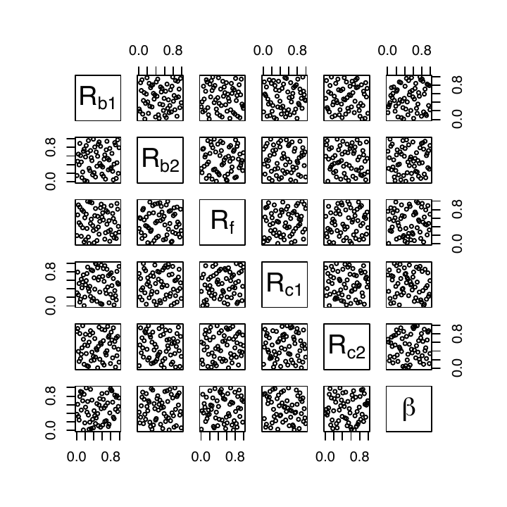
Given the design and corresponding responses, we fit an ordinary kriging
model using the
rkriging package
(Huang and Joseph 2024). To evaluate the model’s performance, we
generate \(10^6\) Sobol points as the test dataset. The left panel of
Figure 10 compares the MaxPro criterion for
designs generated by MaxPro and SFDesign. Consistent with
Figure 6, SFDesign demonstrates a notable
improvement over MaxPro. Additionally, we compare the prediction root
mean square error (RMSE) of the kriging models. The results indicate
that ordinary kriging models fitted on MaxPro LHDs achieve lower
prediction errors, with SFDesign providing more consistent
improvements.
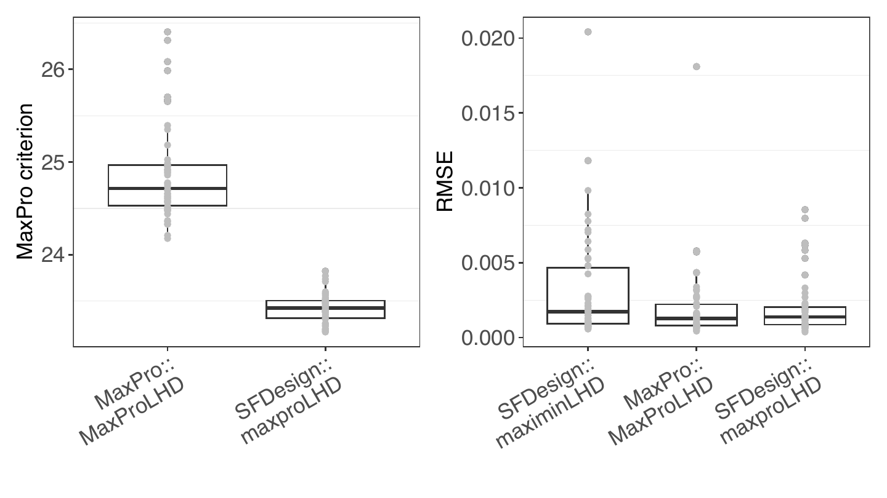
Uncertainty quantification
When the objective is to quantify the uncertainty of a computer code, uniform designs are desired. Here we consider a simulation of the piston motion within a cylinder (Kenett and Zacks 1998). The cycle time in seconds is given by \[C(\mathbf{x}) = 2\pi \sqrt{\frac{M}{k + S^2 \frac{P_0 V_0}{T_0} \frac{T_a}{V^2}}}, \quad \text{where}\]
\[V = \frac{S}{2k} \left( \sqrt{A^2 + 4k \frac{P_0 V_0}{T_0} T_a} - A \right)\]
\[A = P_0 S + 19.62 M - \frac{kV_0}{S}\] where the piston weight \(M \in [30, 60]\) kg, the piston surface area \(S \in [0.005, 0.020]\) m\(^2\), initial gas volume \(V_0 \in [0.002, 0.010]\) m\(^3\), spring coefficient \(k \in [1000, 5000]\) N/m, the atmospheric pressure \(P_0 \in [90,000, 110,000]\) N/m\(^2\), ambient temperature\(T_a \in [290, 296]\) K, and filling gas temperature \(T_0 \in [340, 360]\) K.
We are interested in computing the mean and variance of the cycle time
when the inputs are uniformly distributed within their respective
ranges. Figure 11 shows that the wrap-around discrepancy of
uniform designs generated by SFDesign is lower, leading to more
accurate mean and variance estimations that are closer to the true
values.
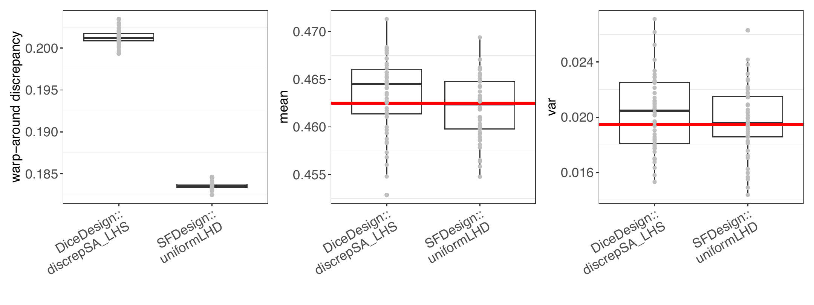
5 Conclusion
In this paper, we introduce the SFDesign package, a comprehensive set of functions for constructing space-filling designs based on several widely used criteria. Through a combination of algorithmic advancements and software optimizations, our package achieves substantial improvements over existing packages, offering more efficient and effective design generation. In addition to supporting established space-filling criteria such as maximin, MaxPro, and uniformity-based discrepancy measures, the package provides a framework for incorporating customized criteria, enabling researchers and practitioners to adapt the design methodology to domain-specific applications. Future extensions may include support for additional criteria beyond those based on pairwise distance or clustering, expanding the scope of design optimization to accommodate alternative space-filling measures.
This work is supported by U.S. National Science Foundation grant DMS-2310637.
:::::
6 CRAN packages used
lhs, DiceDesign, SLHD, maximin, minimaxdesign, MaxPro, SFDesign, Kmedians, Gmedian, rkriging
7 CRAN Task Views implied by cited packages
Distributions, ExperimentalDesign, Robust
8 Note
This article is converted from a Legacy LaTeX article using the texor package. The pdf version is the official version. To report a problem with the html, refer to CONTRIBUTE on the R Journal homepage.